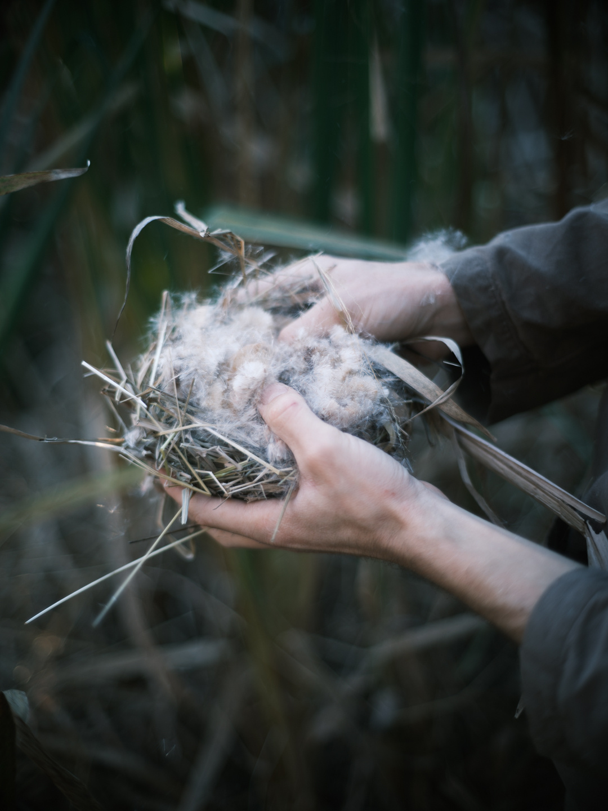
hero photoA way in to the wild living world of nature, community & self
Based in Portugal & USA
We guide families, youth and adults through connection-based wilderness journeys of primitive survival, ancestral skills and depth mentoring to learn with the Earth.
What we do
Learning with the Earth
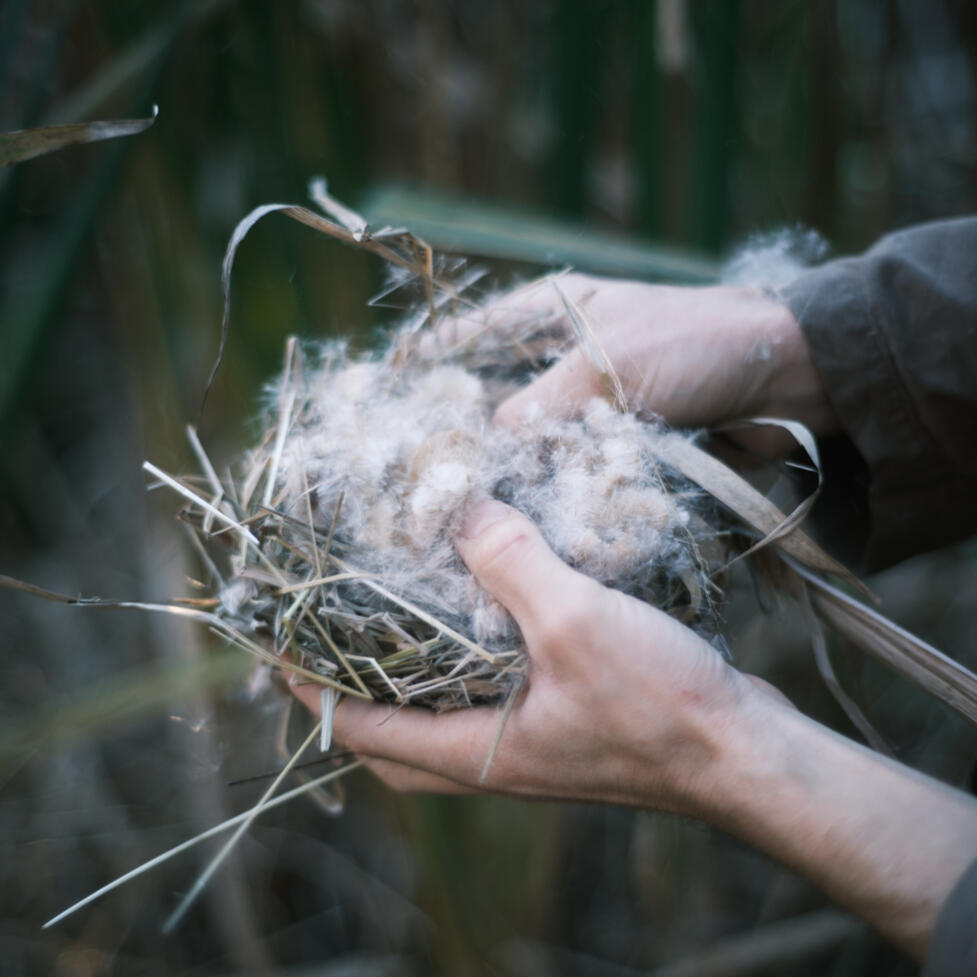
photoNature Connection Depth Mentoring
Group and 1-on-1 mentoring for youth, families, and adults to build awareness, resilience, and belonging through direct relationship with the Earth, rooted in the 8 Shields cultural mentoring model.
Book a discovery call →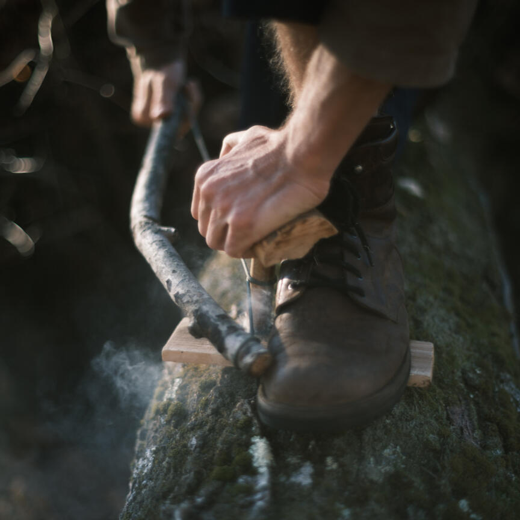
photoAncestral Skills & Wilderness Survival
Learn fire-making, shelter-building, foraging, tracking, and other practical earth-based skills that support self-reliance and reconnection with natural systems. Nature-connected survival skills help us depend less on destructive systems and more on the living Earth and our relationship with it.
Join a Community Sunday →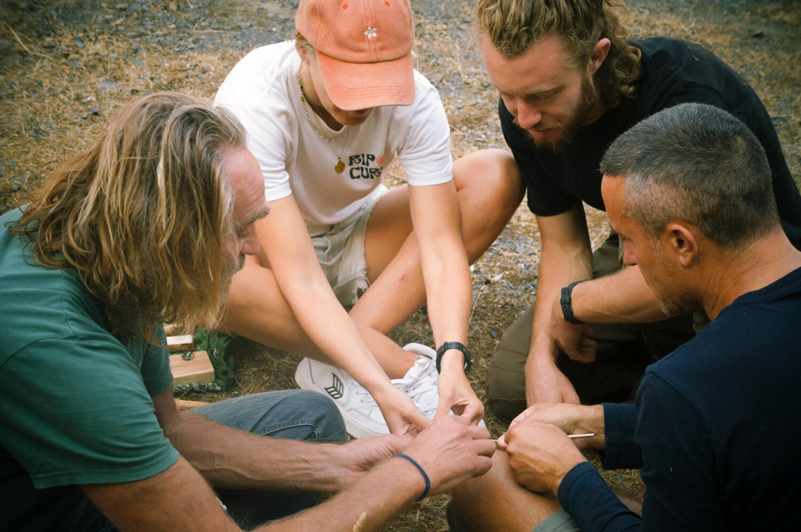
photoNature-Connected Educator Training
Training and consulting for educators, mentors and facilitators to design and lead nature-based learning. Gain practical frameworks for guiding children and youth through cooperation with natural systems, bridging hands-on earth skills, mentoring methods, and experiential learning for thriving learning communities.
Foundation Training, March 2027 →Who we are
Your Guides
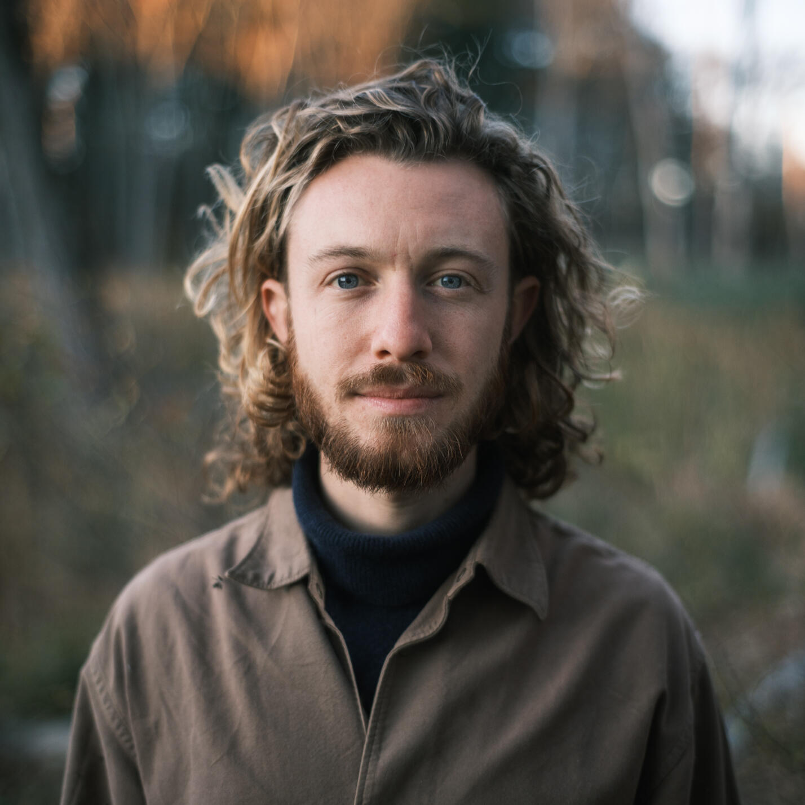
JoshuaJoshua Emerson Glass
Joshua Glass is a nature connection mentor working with families, youth, and adults. Through ancestral skills and wilderness survival practices like fire, shelter, foraging, and tracking, he helps people learn a place well enough to love and care for it. He mentors youth and guides rites of passage with Twin Eagles Wilderness School and has apprenticed with Maine Primitive (Maine), studying the 8-Shields Cultural Mentoring model. He studied social design and community building at Zuyd University in the Netherlands and in 2024, co-founded Kambium•Earth-Based Learning in Portugal. He returns yearly to Massachusetts.
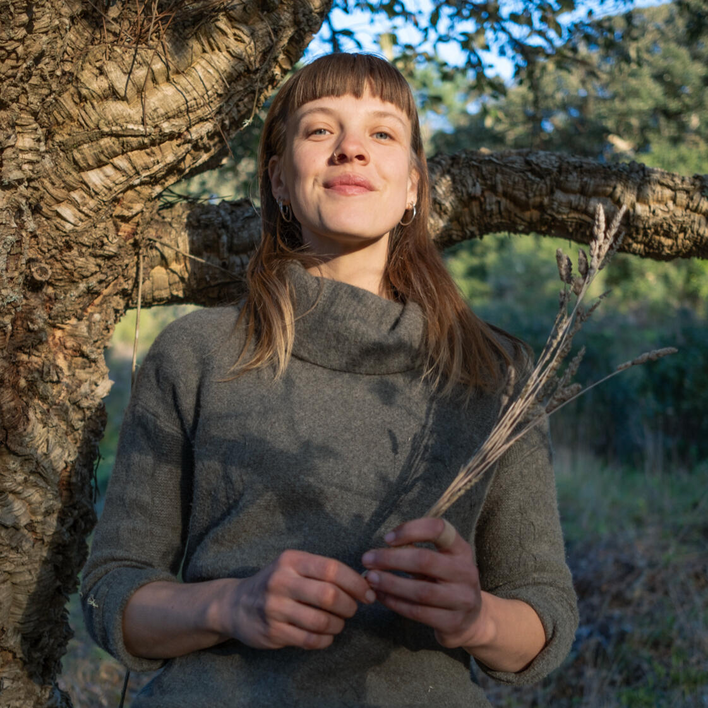
MelinaMelina Feuvrier-Etevenard
Practitioner and teacher of permaculture and regenerative farming, alongside crafting, cooking, and the art of wilderness awareness. She's cultivated her skills in communities and regenerative farms throughout Europe. Driven by a passion for nurturing both ecosystems and cultures, Melina has worked with youth and adults in pedagogical farms and nature camps. A guardian of cycles, she guides herself and others in aligning human lifestyle with the rhythms of the living world. She transforms curiosity into unforgettable learning experiences, and uses wild-foraged edible plants to create vitality-rich, nutritionally balanced and delicious meals. Her love for nature, crafting, and togetherness shapes her approach as a chef and nature connection guide.
Our lineage
Jeannine Tidwell
Co-Founder and Co-Director of Twin Eagles Wilderness School in Sandpoint, Idaho. She and her husband founded the school around 2005, focusing on reconnecting people with nature, community, and themselves through wilderness skills and experiential education. The school emphasizes kinship with place and the broader bio-region, forming deep relationships to foster a sense of belonging. Jeannine has been mentoring people of all ages for over 20 years and leads programs focused on mentoring, leadership, personal growth, and rites of passage for girls and women.
Tim Corcoran
Founder of Purpose Mountain and co-founder of Twin Eagles Wilderness School. A certified Nature-Based Purpose Guide dedicated to personal mentoring and supporting people's deep connection with wild nature to discover their purpose and live their vision. With over two decades of experience, Tim leads men's groups, vision quests, and transformational ceremonies rooted in teachings from his mentors and indigenous elders. He is dedicated to healing cultural divides, fostering holistic health, and nurturing an earth caretaker movement, living as a heart-centered father and mentor.
Events & Courses
Meet us on the land
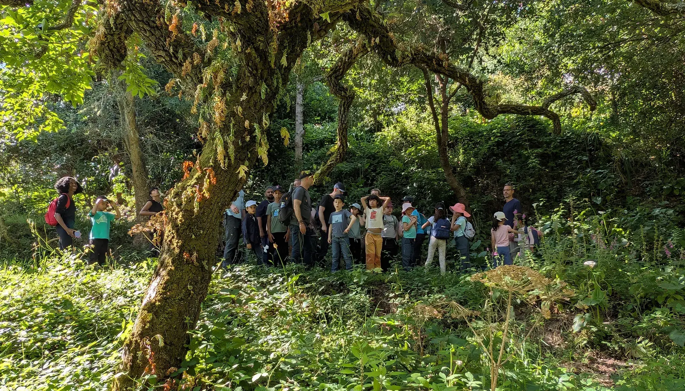
Sundays photoWilderness Skills Community Sundays
Fire, water, shelter, tracking and wild food, through the winter. For families, adults on their own and elders.
- Come for a single Sunday, from €45 per adult or €50 for an adult with a child.
- Or join all six with the Winter Arc: €195 for an adult with a child.
- Up to 30 people each Sunday. Everyone 17 and under comes with an adult.
- Book by Thursday 9 PM before each Sunday.
Coming up
-
29Nov 2026
Book →Community Sunday, first of six
Sintra Mountain, Colares
-
11Mar 2027
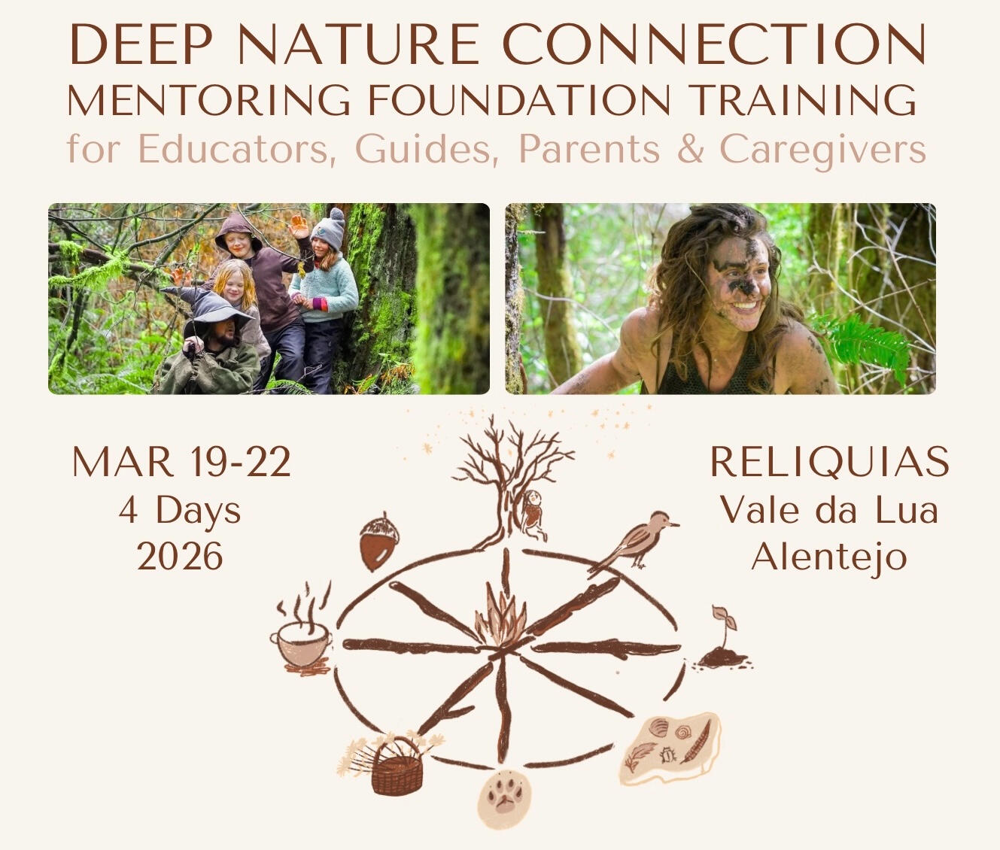
Book →Deep Nature Connection Mentoring Foundation Training
11 to 14 March · Relíquias (Vale da Lua), Alentejo · Early bird €265 until 5 January
New dates go out first on our Telegram channel.
Past events & courses
Deep Nature Connection Mentoring Foundation Training
19 to 22 March 2026 · Relíquias, Alentejo
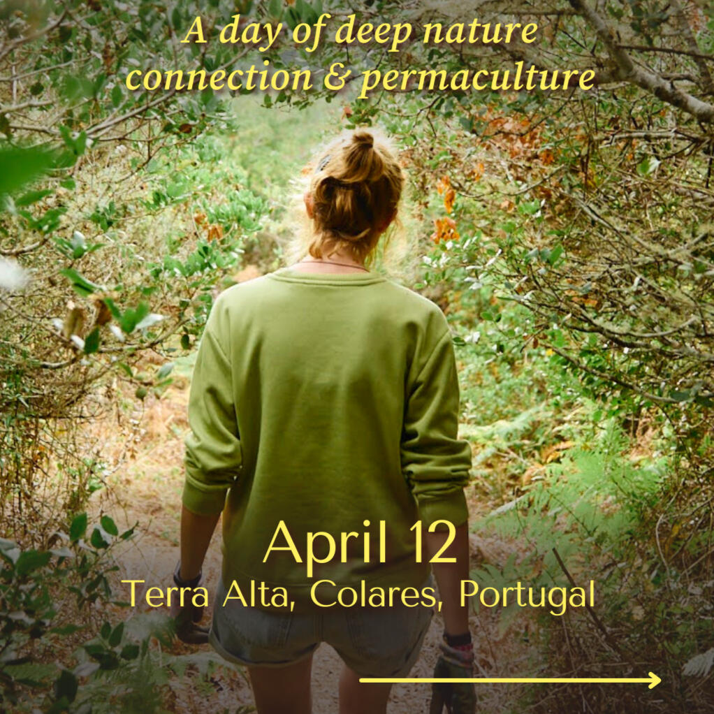
The Edge of the Village: Permaculture & Ecological Stewardship
12 April 2026 · Terra Alta, Ulgueira
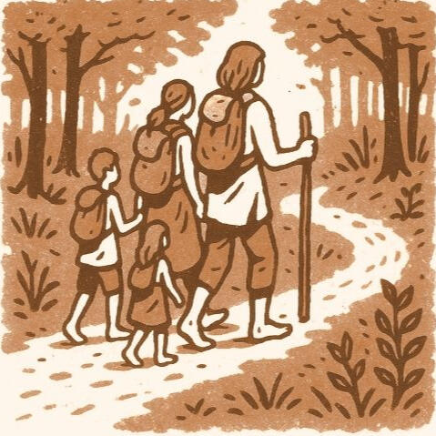
Family Deep Nature Connection Overnight
27 to 29 March 2026 · Abela, Alentejo
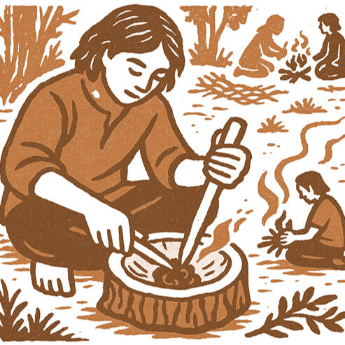
Winter Wilderness Skills Community Days
January to March 2026 · Colares, Sintra
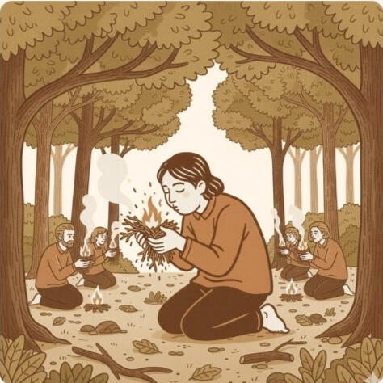
Adult Training: Nature-Connection & Wilderness Skills
28 February 2026 · Colares, Sintra
See it for yourself
A taste of our 4-day adult wilderness program
Articles
Our most recent writings
3 October 2026
From Frantic Reaction to Wise Action
[From the archive] Is regeneration another monkey-mind, problem-making "solution"?

8 April 2026
Trans-Atlantic & Spring
This morning, I tracked a rainbow fading in through a clouded blue sky.

17 February 2026
Living close to nature is not enough
No one tells you that part
Join the team
Work or volunteer with us
If you'd like to work or volunteer with us, we want to hear from you, from admin support to deep nature connected mentoring and facilitation.
Please send a letter of motivation and your CV to info@kambium.earth.
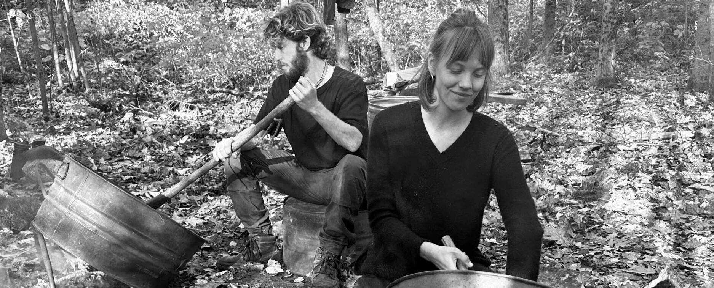
photoWrite to us
Questions about an event, mentoring or working together? Write to us and we'll reply soon.
Order complete
Check your email for confirmation and order information.
Do you know a boy or young man? Reach out to Joshua to explore mentoring for young men.